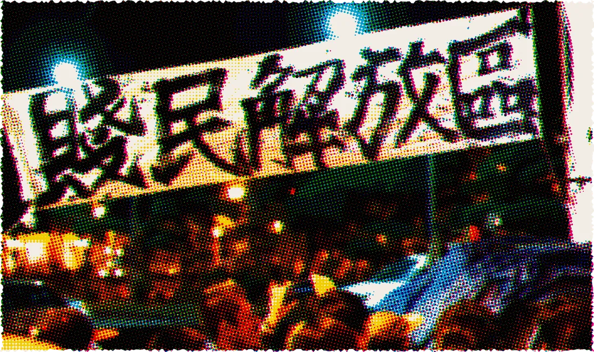
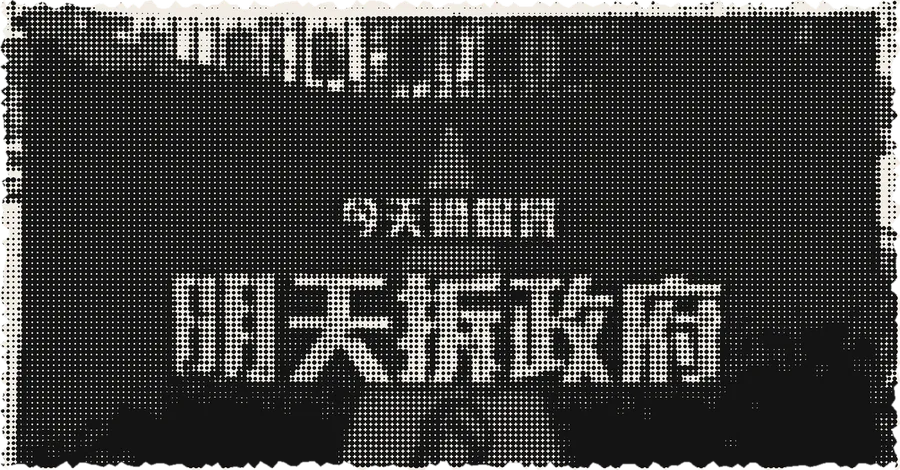
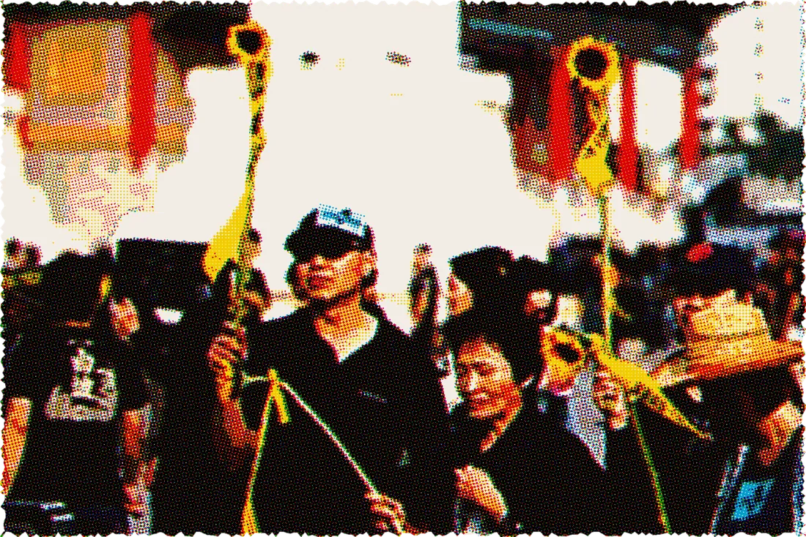
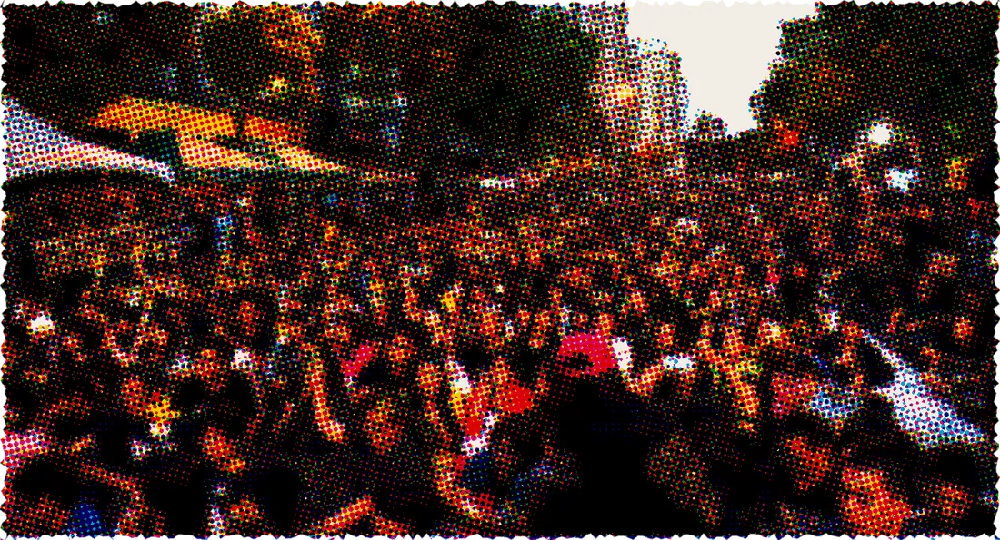

服貿是什麼？
2013 年 6 月，兩岸簽下《海峽兩岸服務貿易協議》，簡稱服貿。它是 ECFA 的一部分，讓雙方在金融、運輸、通訊等服務業互相開放投資。
一份開放金融、運輸、通訊等服務業的兩岸協議，在委員會只花了大約 30 秒，就被宣布「審查完畢」。
如果這件事跟你有關，你會怎麼做？
太陽花學運的起點，不是一場遊行，而是一次只花了 30 秒的審查。先搞懂三件事。
2013 年 6 月，兩岸簽下《海峽兩岸服務貿易協議》，簡稱服貿。它是 ECFA 的一部分，讓雙方在金融、運輸、通訊等服務業互相開放投資。
很多人在意的不只是內容，更是過程。協議怎麼談、怎麼審，外界都看不清楚，因此被批評是「黑箱」。
2014 年 3 月 17 日，內政委員會召委張慶忠在一片混亂中宣布，服貿「視為已審查」，直接送到院會存查。整個過程大約 30 秒。




做這個網站，是因為我發現身邊很多人不想談政治。關心的人，有時還會被叫成「青鳥」來嘲諷。可是，政治一直都在你身邊。
「青鳥」是怎麼來的？
青島鳥東路
2024 年 5 月，立法院表決職權相關修法，場外民眾多次集結抗議，稱為「青鳥行動」。名字取自立法院旁的「青島東路」，把「島」改成長得很像的「鳥」。
這些規則不是自然出現的，都是有人在立法院和政府裡決定的。2014 年那群大學生在意的，就是「決定的過程」能不能被看見。